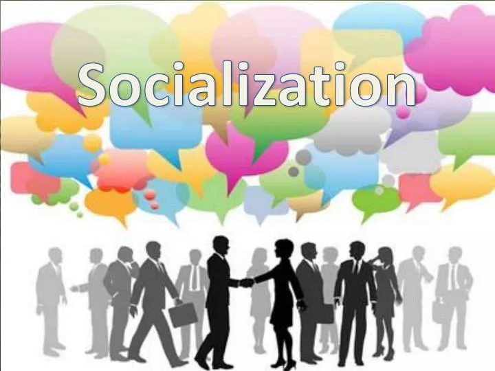
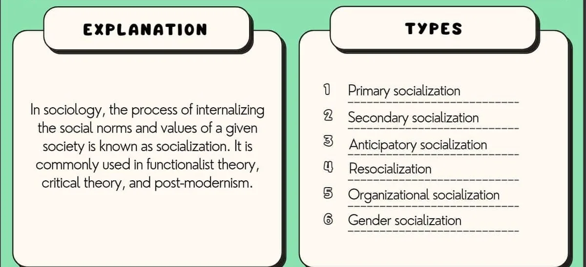
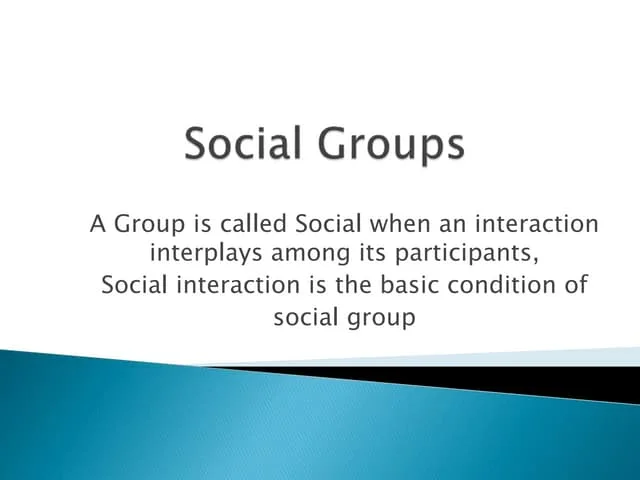

Expanded Nursing Uganda Explanation
Socialization should be understood beyond a short definition. Link the concept to patient history, focused assessment, common risks, nursing priorities, documentation and evaluation of outcomes.
01 Socialization
At birth, humans come into the world needing to learn many things. We are not born knowing how to be social. Socialization is the process that molds us into social beings and teaches us how to live in our society. It's how we learn about our culture and become part of it.
- It is the process by which individuals learn the rules and ways of their group or society. It's about learning how to fit in.
- It is how culture is passed down. People learn the habits, beliefs, and practices of the groups they belong to.
- It is a learning process that starts when we are born and continues until we die. Through this process, we learn everything we need to know to be a member of our society.
- It helps people learn their social roles (what they should do in different situations).
- It helps people feel connected and willing to work together.
- To become a social person who understands and uses culture.
- To help keep society organized by following social rules (norms) and standards.
- To help people live good and meaningful lives.
- To find and develop hidden talents in people so they can have a happy life.
- To learn and be able to do social roles.
- To create clear ways of behaving in society.
- To shape and develop a person's complete personality.
- It is a continuous process: It happens all through life, from birth to death.
- It transmits culture: It is the main way new generations learn the culture of older generations.
- It is a learning process: We learn many things (rules, behaviors, beliefs) during socialization.
- It sets limits: It teaches individuals what is acceptable and not acceptable in society, through interactions with others.
These are the ways we learn during socialization:
- Imitation: Children learn by copying what others do. They watch family members or friends and try to do the same things. This is how they learn language and many behaviors.
- Suggestion: This is when ideas or behaviors are put forward, and people tend to accept them. This can happen through talking, pictures, or media (like adverts). For example, advertising suggests certain products are good, and people might buy them.
- Identification: As people grow, they start to identify with things or people that meet their needs or that they admire. They might want to be like a certain person or belong to a certain group.
- Language: Language is very powerful. It is how we talk to each other and how culture is passed on. Language helps shape a person's thinking and personality.
02 Types of Socialization
- 1. Primary Socialization: This is the first stage of socialization, usually happening in childhood within the family. It's where we learn the basic norms, values, and behaviors of our culture.
- 2. Secondary Socialization: This occurs outside the family, as individuals learn the rules and behaviors of specific groups or institutions (e.g., school, workplace, peer groups).
- 3. Anticipatory Socialization: This is the process of learning and preparing for future roles or situations. People adopt the norms and values of a group they wish to join.
- 4. Resocialization: This involves learning new norms, values, and behaviors that are different from previously held ones. It often occurs in settings that demand a dramatic shift in one's life (e.g., military, prison, cults).
- 5. Organizational Socialization: This refers to the process by which new employees learn the knowledge, skills, values, and behaviors necessary to function effectively within an organization.
- 6. Gender Socialization: This is the process through which individuals learn the behaviors, attitudes, and roles that are considered appropriate for their gender in a particular culture.
These are the main groups or influences that teach us how to be social:
- Families and parents: This is our first and most important teacher.
- School and Teachers: They teach us knowledge, skills, and social rules outside the family.
- Playmates / peer group or friends: We learn from people our own age, like how to share, play, and follow group rules.
- Religion: Religious teachings and communities give us moral rules and a sense of belonging.
- Literature: Books, stories, and other writings teach us about different lives, ideas, and values.
- Social media: New forms of communication like Facebook, WhatsApp, and TikTok influence our ideas and behaviors.
- The State (Government): Laws, public policies, and national programs also teach us how to behave as citizens.
Three main things play a part in how we are socialized:
- A person's natural gifts and mind: What a person is born with (their body and brain).
- The place/environment they are born into: The surroundings and conditions where they grow up.
- The culture, rules, attitudes, and roles of the society: The shared ways of life, beliefs, and expected behaviors in their social groups.
Note: Socialization helps people become better and more capable. Making socialization better offers great chances for the future, helping to improve human culture and society.
03 Culture
Culture is what makes humans special and different from animals. It is our shared way of life. Culture and society always go together.
- Culture is everything that humans make and do to reach their goals.
- Culture is a complex whole that includes knowledge, beliefs, art, morals, laws, customs, and any other skills or habits a person learns as part of society.
- Culture is everything created by humans over time. It builds up from one generation to the next.
- Culture is the collection of thoughts, values (what we think is important), and objects that a society has.
- Culture is everything a person learns by living in a society.
- Culture is Social: Culture does not exist alone. It is made by people living together in a society and is shared by everyone in that society.
- Culture is Learned: We are not born with culture. We learn it from our family, friends, and society (e.g., learning to shake hands when greeting someone).
- Culture is Shared: Ideas, beliefs, values, customs, and ways of doing things are shared by all members of a group or society. This helps people understand each other.
- Culture is Transmissive (Passed On): Knowledge and culture are passed from older people to younger people, and from one group to another. Language is the main way culture is passed on.
- Culture is Different from Society to Society: Every society has its own unique culture. Ideas, traditions, values, beliefs, and practices are different in each society and can also change over time in the same society.
- Culture is Gratifying (Satisfying): Culture helps us meet our needs and desires. These can be basic needs (like food), moral needs, or social needs. Culture gives us ways to get what we need.
- Culture is Continuous and Cumulative: Culture is always going on. It is a social heritage from the past that keeps growing. New things are added to it over time.
- Culture is Consistent and Integrated: Culture is like a system where all parts are connected. For example, a society's values influence its rules and beliefs, making them fit together.
- Culture is Dynamic and Adaptive: Culture is mostly stable, but it does change slowly over time. It can change to fit new situations and helps people adjust to their environment.
- Culture is Super-Organic and Ideational: Culture is more than just physical things or individual thoughts. It represents the ideas and values of a whole society. For example, a flag is not just cloth; it stands for the ideas of a country. Every society sees its own culture as important and ideal.
- It defines social situations: Culture tells people how to act in different social settings (e.g., when it is okay to laugh or cry).
- It shapes personality: Culture gives people chances to develop their character and sets limits on what they can become.
- It provides behavior patterns: Culture guides how individuals should behave. It helps control people's actions and also allows them to express their energy. It rewards good actions and discourages bad ones.
- It creates a sense of identity: Culture gives people a shared understanding of who they are and where they belong.
- It provides solutions to problems: Culture offers traditional ways of understanding and solving common problems.
- Material Culture: These are the physical things made by humans. They are practical and can be seen or touched. Examples: Printing presses, machines, money, buildings, tools, roads, clothes, food, technology.
- Non-Material Culture: These are the non-physical things that show the inner nature of humans. They are ideas, beliefs, and ways of behaving. Examples: Language, beliefs, habits, rituals, customs, attitudes, traditions, songs, stories.
This is when cultural things (like ideas, inventions, or practices) spread from one society to another. This can happen directly (e.g., people meeting) or indirectly (e.g., through media).
It can be hard to know where a cultural practice started once it has spread widely.
- Trade and Commerce: When people trade goods, they also exchange ideas and practices.
- Migration: When people move to new places, they bring their culture with them.
- Communication and Technology: TV, internet, social media, and phones make it easy for ideas and trends to spread quickly across the world.
- Conquest and Colonization: When one group takes over another, their culture often spreads to the conquered people.
- Tourism: Tourists experience new cultures and might bring new ideas back home.
Culture greatly affects health in many ways:
- It shapes how people think about health, illness, and death.
- It influences how people try to stay healthy (health promotion).
- It affects how a person feels and talks about being sick.
- It guides where a sick person looks for help (e.g., traditional healer vs. hospital).
- It influences the type of treatment a sick person prefers.
To provide better health care, it's important to understand cultural views on:
- Role of family: Who makes decisions, who is in charge, and the duties of each family member.
- Role of community: How the wider community supports or influences health.
- Religion: Beliefs about diet, the causes of illness, and preferred treatments.
- Views on death and dying: How death is understood and rituals around it.
- Traditional medicine: The use of local healers and herbal remedies.
- Sexuality, fertility, and childbirth: Cultural practices and beliefs around these sensitive topics.
- Food beliefs and diet: What foods are eaten, what is forbidden, and how food is prepared, as these affect nutrition and health.
04 Social Groups
A social group is any collection of people who share something in common and are together because of it.
No normal person lives alone. We all need groups. A person can belong to many groups at the same time to meet different needs.
A group can be very large or as small as two or three people.
Some groups form naturally (like friends), while others are planned for a specific purpose (like a nursing student association).
- Collection of Individuals: There must be more than one person.
- Interaction Among Members: The people in the group must talk to and react with each other.
- Group Unity and Solidarity: Members often feel a sense of togetherness and loyalty to the group.
- Group Interests: The group shares common goals or things they care about.
- Group Norms: The group has its own rules or ways of behaving that members are expected to follow.
- Dynamic: Groups are not fixed; they can change over time.
- Stability: While dynamic, groups also have a certain level of stability to remain a group.
- Influence on Personality: Being part of a group affects how a person thinks and behaves.
Groups can be sorted in different ways, based on their size, how members interact, their interests, age, gender, social class, and more.
The two main types are Primary and Secondary groups:
- 1. Primary Group: This is a small group where people have close, face-to-face relationships that last a long time. There is strong emotional connection. Examples: Family, close neighborhood friends, a small close-knit village.
- Characteristics: Close, face-to-face relationships, with mutual help and companionship.
- Social connections are direct and personal.
- Smaller in size (e.g., 2-50 people).
- Often limited to a small physical area.
- Members care about each other's general well-being.
- 2. Secondary Group: This is a collection of people who share a common interest or goal. Members might not know each other very well, and relationships are more formal. Joining is often by choice. Examples: Political parties, professional associations (like Student Nurses Association), religious organizations, large companies, the State (government).
- Characteristics: Provides experience without deep personal closeness.
- Social connections are indirect, impersonal, and not intimate.
- Relatively bigger in size and not limited to a small physical area.
- Interests are specific; these are called "special interest groups."
- Feature Primary Group Secondary Group
- Relationships Close, face-to-face, mutual aid, companionship. Direct and intimate. Provides experience without intimacy. Indirect, impersonal, not intimate.
- Size Smaller (e.g., 2-50 people). Localized and limited to a definite area. Relatively bigger, not restricted to a small area.
- Geographic Area Often confined to a small physical area. Not characterized by a physical area. Can be widespread.
- Interest General interest; everyone cares about the well-being of everyone else. Specific interest; these are special interest groups.
05 Nursing Uganda Clinical Lens
Use Socialization as a practical nursing topic, not only a memorized definition. Turn the topic into practical nursing knowledge: meaning, assessment, care priorities, teaching and evaluation.
- What to understand first: define socialization, identify the normal or expected pattern, then explain what changes when the patient is unwell.
- Why it matters in care: the nurse must recognize risk early, explain findings clearly, document accurately and know when to escalate.
- How to revise it: connect each point to assessment, nursing diagnosis or care problem, intervention, rationale and evaluation.
06 Assessment Guide
- Key definitions, patient history, focused observations and risk factors.
- Findings that are normal, abnormal or urgent.
- Resources, referral needs and documentation requirements.
07 Nursing Priorities, Rationales and Outcomes
- Protect safety, comfort, dignity and infection prevention.
- Provide clear care, education and escalation when needed.
- Evaluate response and record what changed.
The rationale for these priorities is patient safety: nursing actions should prevent deterioration, reduce discomfort, support recovery and create clear evidence for the next caregiver.
- Expected outcome: The topic is understood in a way that supports safe nursing judgement and revision.
08 Patient Teaching and Revision Check
- Explain socialization in simple language the patient or caregiver can repeat back.
- Teach warning signs, medicine or follow-up instructions, hygiene or lifestyle points where relevant.
- For exams, prepare a short answer using: definition, causes or risk factors, signs, assessment, management, complications and prevention.
- For ward practice, document baseline findings, actions taken, patient response and the plan for review.
Illustrations and Diagrams (3)



Related Video Lectures
Watch nursing lecture videos on YouTube for this topic. Opens in a new tab.
Watch on YouTubeExternal link: YouTube may use its own cookies and terms. Nursing Uganda is not affiliated with YouTube.